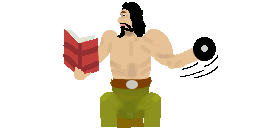

Bedienung - Steigern & Verwalten |
Steigern & Verwalten

MAGuS stellt zwei Verfahren zu Verfügung, um exisitierende Figuren zu steigern:
Figuren können unkompliziert mit dem Zufallsgenerator gesteigert werden.
Ein Abenteurer kann detailiert und individuell von Hand gesteigert werden.
|
| Zum Seitenanfang |
|